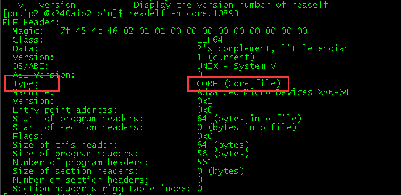
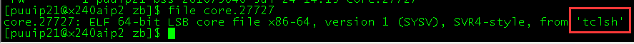
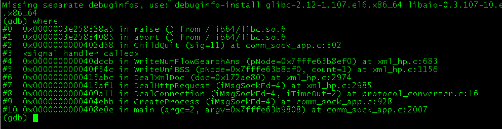
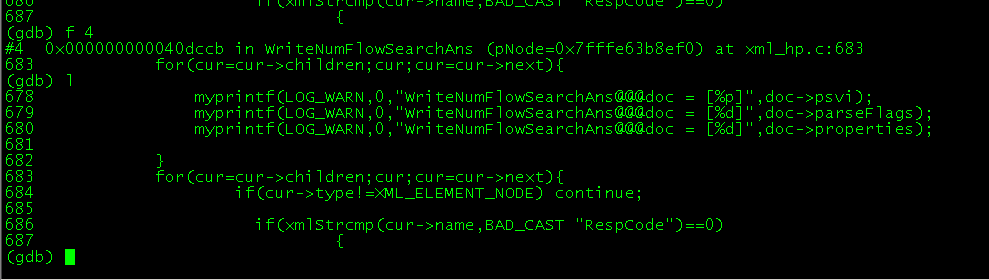

gdb与dbx使用简介¶
前言¶
写这篇文章主要是因为公司后台开发人员常常遇到c、c++程序上的问题，可能是在平时开发 时遇到，或者是换包时遇到，而又不是人人都会使用gdb或dbx，尤其是新人，在换包时很可 能只有自己一个后台开发，如果能自己解决，就不用半夜给同事打电话或把他叫过来了，毕 竟谁在半夜或是在休假或是在外地时被叫过来都是件无奈且不爽的体验。这篇文章就是提供 一些遇到问题时的解决方法。
本文分为三块。第一部分讲开发发时使用gdb（dbx）调试，第二部分讲分析core文件，第三 部分讲调试正在运行的进程。文中命令有些是dbx或gdb特有的，自己多试一下就知道了。
PS¶
文档采用Sphinx生成pdf或html。
gdb core分析¶
由于公司现在有部分程序是从AIX迁移到linux系统的，AIX上的程序使用xlc_r编译器编译， Linux上的程序使用gcc编译。由于编译和运行时的环境差异，有些问题在移植重新编译时就 可以发现，从而解决掉，但还有其他一些问题只有在程序运行时才会显示出来（或许一运行 就报错，当时就可以解决）。在运行时报的错误，很有可能就是coredump。而很多程序没有 测试环境（或许是当年开发时的机器开发好了就转为现网，或者是测试环境无法使用等等） ，直接现网运行，以至于没法调试。只能根据现网运行状况判断有无问题。或者产生core文 件时根据core文件定位问题发生原因解决。本章介绍的就是针对core文件的分析。
命令介绍¶
core文件生成开关
core文件可能是默认不生成的，需要设置打开开关*ulimit -c*,如果显示0，说明开 关没打开。ulimit -c unlimited，打开core文件生成开关，当前会话有效。关闭 开关，当前会话有效*ulimit -c 0*
- 永久打开core开关
编辑/etc/profile文件 末尾加上ulimit -c unlimited，保存退出。 运行：source /etc/profile，就可以了。
程序编译时请加上-g选项，方便调试分析
程序编译时请加上 -g 选项，gdb调用方法： gdb program core，在调试程序前， 必须先将-g选项包含在编译信息中，编译生成带调试信息的文件。
使用方法
gdb program core
dbx program core
dbx -C core
pwd
显示当前目录
file
shell中单独使用，用来查看core文件是什么程序生成的:file core。
file
dbx或gdb中使用，用来查看加载文件。例如：file test.cpp
readelf -h core
当看到有core字样时，说明该文件是core文件。
**
Ctrl+\**程序没有core而是报错或死循环直接按
ctrl + \,这个组合件可以直接让程序 coredump后退出，然后用gdb就能看到代码在哪里，这对多个文件的大系统可以快速 定位程序出错在何处。不过这个还没没有使用过在具体的环境中使用过。需测试。**
kill -3 pid**向pid程序发送SIGQUIT信号，通常生成core文件
**
kill -6 pid**向pid程序发送SIGABRT信号，通常生成core文件
dbx -d core
可能命令输入还需要调整，dbx缺省的嵌套深度限制为 25，这个命令主要用于dbx core 时报栈层数不够，那你可以这样输入，dbx -d 255 -C core
dbx -I Directory
gdb也类似。（大写 i）将 Directory 变量指定的目录包含到搜索源文件目录列 表中。搜索源文件的缺省目录为：文件编译时该源文件所在的目录。只有编译器 设置了对象中的源路径时才能搜索目录；当前目录；当前程序所在的目录。
使用例子：
dbx -I/unibss/users/tstusr01/src/acc/billmgr/src/ -I/unibss/users/tstusr01/src/acc/billmgr/kernel/ createBillFile_en corewhere
where 命令在gdb或dbx加载core文件后第一个使用，用来查看程序崩溃时的函数调 用堆栈，通常是从下到上显示崩溃的过程。一般最上层几行显示的是系统的函数， 这需要根据经验来判断。或者看后面显示的库文件，比如libc.so 字样的就是了。 系统是没有问题的，如果有那也不是我们能解决的。所以主要关注公司的代码产生 的函数。最下面几行基本也不用注意，比如显示的是TclMain之类的是tclsh解释器 的函数，这部分有错那所有的程序都是有问题了，呵呵。找到程序对应的函数，通 常有几行，利用f命令切换堆栈进去。
bt
bt命令和where命令是一样的效果。
info locals
当用f命令切换到相应的堆栈时，可以用info locals查看此时所有的局部变量及其值， 用*info catch*查看。当前函数中的异常信息，info args打印当前函数的参数名及其 值。
f level
f 10表示切换到第10层堆栈，f 5表示切换到第5层堆栈。
up
up命令类似f命令，用于切换堆栈。例如，up 5，效果自己观察一下。
down
down命令和up切换方向相反。
p var或print var
p i表示显示变量i的值，p *ptr可以打印指正ptr指向的对象，p ptr->name表示显 示指针指向的对象中name变量的值。通过该命令，可以查看变量的值，从而找到不 合理的地方，查出问题所在。比如指针值为0的解引用，aix上是不会报错的，但 linux就core了。
whereis i
显示变量的定义位置。
l或list
l命令就是list的意思。可以在gdb（dbx）中使用，会显示出错的源代码。当程序 代码不多时可以这样查看，如果多的话，建议找到编译出程序的源码，用ultraedit 编辑器查看。
- set listsize <count> 设置一次显示源代码显示的行数
- show listsize 显示listsize的设置
- l linenum 查看行数上下代码
- l -查看当前行前面的源代码
- l +往后显示源代码
- l <first> ,<last>显示从first到last的源代码
- l function 查看function函数的源代码
通过以上几个命令，基本就可以定位出问题了。gdb定位问题，但是有时候不一定就能一 眼看出，这时候需要平时积累的经验以及基本功了。或者根据查到的线索，上baidu搜索 一下有没有类似的问题被解决的，可以参考下。
- gdb带参数调试程序
运行gdb后，在gdb环境的命令行提示符下输入如下命令： set args “argv1” “argv2”
上述的argv1，argv2分别代表参数一，参数二
如果程序是a.out，运行时输入./a.out hello world，则在GDB中通过run hello world来运行。
GDB下显示完整的长字符串
set print element 0
实例分析¶
file 命令使用
unif_exec core文件分析
unif_exec程序是从aix移植到linux上的，平时运行老是产生core文件。导致考核 不过关,接到查找core的原因的要求，我针对程序core的原因查找了一下。由于文章 是在解决后才写的，现网主机上的core文件已经被删了。所以只能文字描述了。
首先到core的主机，运行gdb unif_exec core,等待core文件加载完毕。输入where 命令，看到程序崩溃时的堆栈。根据经验，使用多次f、l、p命令，定位到文件 txt_interp.cpp。
协议转换程序core分析
首先输入命令：
gdb protocol_converter core.12113,再输入where命令，显示:从下到上显示有11层堆栈,堆栈0,1不必考虑，是系统函数。堆栈2，显示函数 ChildQuit(),到源代码中查找,发现是在CreateProcess()函数中注册 的(SetSignalHandler(ChildQuit))信号处理函数，在收到signal 11(SIGSEGV)时 调用，这是一个非法地址引用的信号。说明有非法地址访问。到这里，堆栈2的信 息就全部得到了，没必要在这一层再继续查找。堆栈3看不出什么有用的东西，切 换到堆栈4:f 4。显示是在xml_hp.c:683出错，用l命令看源代码:
说明是
for(cur=cur->children;cur;cur=cur->next)出错，用p cur查看cur 指针的值，显示是0。